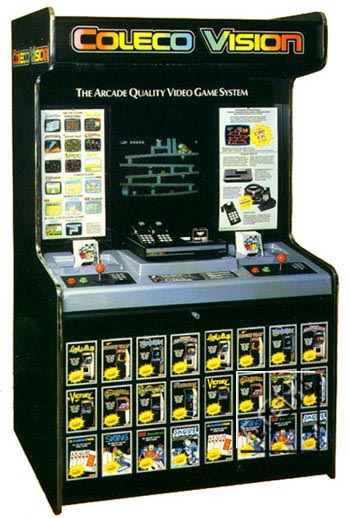

While preparing for the upcoming Phillyclassic show this coming April 26-27 (www.phillyclassic.com) I thought it would be nice to expand upon the large Atari-centric kiosks which would already be coming to the show for people to play and enjoy. Kiosks have a certain alure to them, they bring back fond childhood memories of going to the videogame store each weekend to marvel at the kiosks and the treasures inside, to play the latest game releases and to meet up with your friends for some friendly competition until owner got tired of you hogging up the display and kicked you out, only to come back again another day.

The Colecovision kiosk is actually very similar in design the Atari 2600 1981 "POP" Dealer Demonstrator in shape and size. While there are a small handful of these kiosks around, due to their rarity, the cost could run the casual to hardcore collector anywhere from $2,000-$2,500. So, with some time to spare and some eager classic gaming enthusiasm I set off to build one from scratch. Reproducing the kiosk posed several challenges, one of which was the fact that all I have is the photo above to go by (btw, giving credit where credit is due, I used the photo from Keita's www.atarihq.com website) and with no mechanical drawings, measurements or even internal design I would have to use my creativity and come up with the design from scratch.
Okay,
so where to begin. Well, one decision was ease of work
on the design, since plywood, particle board and so forth come in 4'X8'
sheets, I would use divisions of that for the design. Off to
Home Depot for a sheet of 3/4" Particle board, the standard used on coin-ops.
Next, I had them cut it in half for 2 2'X8' sheets, so the decision has
already been made that the depth will be 2' (24"). After
measuring several coin-ops, most are 6' (72") in height, so I cut the 2'X8'
sheets down to 2'X6'
Now
for the control area, the height on most coin-ops is generally 38-40" high,
so I went with 39" for the height. Then looking
at the photo, the control area is on an angle, so after drawing out several
lines at varying angles I found 10 degrees of incline looked best.
Control area depth... taking a look at an actual Colecovision
and based on the photo, I came up with a control area depth of 14" leaving
10" for the upright side panel above the control panel area.
That height would be 24" high and then using a 5 degree angle to come back
out to where the marqee would be and finishing off with a 6" height on
the marqee. The edges were all round, so using a small can
I drew the curves. For cutting out the pattern
you could use a jigsaw, Rotozip or a Router to cut out the form, I used
a Porter Cable Router with a wood cutting bit. I wont
be going into costs of tools, only materials. Cost of the particle
board: $15.00
So far so good, repeat this for the other panel and once finished, used a wood file and smooth out the edges and clean up the corners and curves. Next we will apply the outside covering. You can use either Laminate or contact paper. Laminate is far more expensive ($45 for a 4'X8' sheet) compared for $4-$5 for a roll of contact paper. However the look is far more professional and will last a lot longer if you use laminate as your choice. I will be applying black contact paper on the inside walls since very little is exposed once the kiosk is assembled.